# clear the environment
rm(list = ls())
# libraries
library(texreg)
library(tidyverse)8 Multiple Regression
We are going to extend our simple bivariate regression to multivariate regression.
8.1 Preliminaries
Let’s start with clearing the environment, recalling libraries, and loading the data.
8.2 Controlling for Confounders
In the example below, we have only one independent variable (\(X\)).
\[ Y = \alpha + \beta * X + \epsilon\]
Most often, the world is way more complex and investigating a direct relationship \((X \rightarrow Y)\) is not appropriate because of confounders.
Confounder Variable Z
graph LR
Z("Confounder (Z)") --> X("Explanatory Variable (X)")
X("Explanatory Variable (X)") --> |?| Y("Outcome Variable (Y)")
Z("Confounder (Z)") --> Y("Outcome Variable (Y)")
Therefore, we need to control for \(Z\).
What do we mean by controlling for \(Z\)? In the simplest sense, controlling for \(Z\) means investigating the relationship between \(X\) and \(Y\) for different values of \(Z\).
- Look at the \(X\)-\(Y\) relationship when \(Z\) = 0
- Look at the \(X\)-\(Y\) relationship when \(Z\) = 1
- Look at the \(X\)-\(Y\) relationship when \(Z\) = 2
- Look at the \(X\)-\(Y\) relationship when \(Z\) = 3
- …
We cannot really do this manually or one-by-one when \(Z\) is numerical or when we need to consider multiple confounding variables, both of which are often the case.
We incorporate \(Z\) directly into our regression model. This gives us the following regression model.
\[ Y = \alpha + \beta_1 * X + \beta_2 * Z + \epsilon\]
Including other variables
When our primary goal is to predict \(Y\) rather than investigating the relationship between \(X\) and \(Y\), including other main predictors of \(Y\) will increase the ‘goodness of fit’ of the regression model. In this regard, we may want to include variables that are not directly related to \(X\), but is important for explaining \(Y\)
graph LR
%%X("Explanatory Variable (X)") --> Z("Confounder (Z)")
Z("Confounder (Z)") --> X("Explanatory Variable (X)")
X("Explanatory Variable (X)") --> Y("Outcome Variable (Y)")
Z("Confounder (Z)") --> Y("Outcome Variable (Y)")
A("Another Factor (K)") --> Y("Outcome Variable (Y)")
Then, our model would be:
\[ Y = \alpha + \beta_1 * X + \beta_2 * Z + \beta_3 * K \]
Putting a new letter for each and every variable would be cumbersome and we would soon left out of letters. Therefore, we use subscripts to generalize the formula.
\[ Y = \alpha + \beta_1 * X_1 + \beta_2 * X_2 + ... + \beta_m * X_m + \epsilon\]
In the model above, we have \(m\) number of variables, giving us \(\beta\) number of coefficients (one for each variable).
8.3 Model Specification
You might be asking the following question: which variables should I include in my model? There is no quick and easy answer to this question. The answer to this question comes from your theory and your objective. Recalling the lectures on theory, research design, and causality is important in this respect.
graph LR
X --> Y
Z --> Y
Z --> X
K --> Y
A --> B
C --> B
Imagine that your main goal is to explain the relationship between \(X \ \rightarrow \ Y\), and your theory is summarized in Figure 8.3. In this case, we must consider \(Z\) because it is a possible confounder. If your main goal is to predict \(Y\), then it is a good idea to also include \(K\). In either case, however, there is no reason to include \(A\), \(B\), or \(C\).
Again in Figure 8.3, if your goal is to explain \(B\), then you should include \(A\) and \(C\) in your regression, and leave the others out.
Let’s continue with another hypothetical example, which is summarized in Figure 8.4. This is your theory on voting behaviour and your main interest is to explain voting behaviour.
As we discussed in the lecture, there might be some people in the world voting the way they do because of their colour preference; such as voting Labour because they like red, or voting Conservative because they like blue. However, we do not expect colour choice to make a meaningful impact on vote choice: at best, a handful of people are making political decisions based on colour preferences. There are way more important factors, such as age, social class, wealth, education, etc. to explain voting behaviour. We would not consider favourite colour as a factor to include in a regression analysis to study voting behaviour.
On the other hand, favourite colour might be highly important in some areas of market research; for example, in explaining why people buy some products. A company may decide the colour of their products based on such research, where favourite colour is an important variable.
graph LR
A(Age) --> Y("Voting Behaviour")
C("Social Class") --> Y("Voting Behaviour")
C("Social Class") --> E("Education")
E("Education") --> Y("Voting Behaviour")
E("Education") --> W("Wealth")
W("Wealth") --> E("Education")
W("Wealth") --> Y("Voting Behaviour")
C("Social Class") --> W("Wealth")
S("Year Born") --> A2("Cohort")
S("Year Born") --> A("Age")
A2("Cohort") --> Y("Voting Behaviour")
FC("Favourite Colour") --> |weak?/none?| Y("Voting Behaviour")
8.4 Multivariate Regression Example: Putnam Data Continued
Let’s load Putnam’s data again and continue our analysis.
# Putmam Data
data <- read.csv("data/putnam.csv")
# View(data)
names(data)
#> [1] "Region" "InstPerform" "CivicCommunity" "NorthSouth"
#> [5] "EconModern"Conventional wisdom for answering this question was centred around economic development. To put it simply, more economically developed places create better political outcomes, including better functioning institutions. This way of thinking can be simplified as:
Economic development \(\Rightarrow\) Institutional performance
However, Putnam (1994) challenged this conventional thinking by proposing that civic culture and social capital are the driving force behind better institutional performance.
Civic community \(\Rightarrow\) Institutional performance
Let’s analyse the data. Creating scatter plots is a nice place to start.
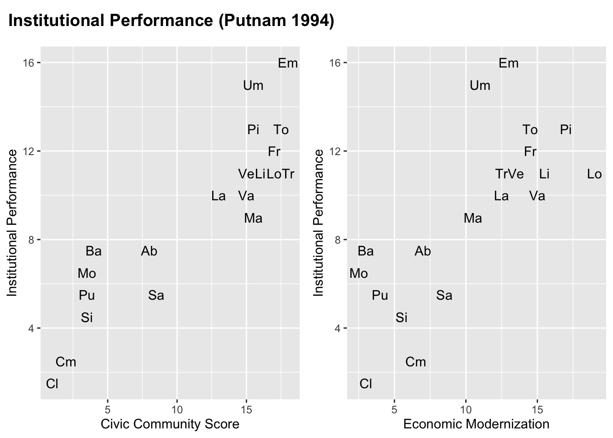
It looks like both \(Civic\ Community\ Score\) and \(Economic\ Modernization\) are highly correlated with \(Institutional Performance\).
Let’s run a series of regressions to further unpack the relationships.
8.4.0.1 Model 1: Putnam’s Simple Argument
Our first model is the one we run last week.
# model 1:
m1 <- lm(InstPerform ~ CivicCommunity, data = data)8.4.0.2 Model 2: Conventional wisdom
# model 1:
m2 <- lm(InstPerform ~ EconModern, data = data)Let’s see both regressions.
screenreg(list(m1, m2), include.rmse = T)
#>
#> ====================================
#> Model 1 Model 2
#> ------------------------------------
#> (Intercept) 2.71 ** 3.01 *
#> (0.84) (1.38)
#> CivicCommunity 0.57 ***
#> (0.07)
#> EconModern 0.59 ***
#> (0.12)
#> ------------------------------------
#> R^2 0.81 0.57
#> Adj. R^2 0.80 0.55
#> Num. obs. 20 20
#> RMSE 1.79 2.66
#> ====================================
#> *** p < 0.001; ** p < 0.01; * p < 0.05Both variables, namely \(Economic\ Modernization\) and \(Civic\ Community\), are statistically significant and indicate a positive relationship with \(Institutional\ Performance\) (see Models 1 and 2 above). The magnitude of the relationship is also similar for both variables:
- One unit of increase in \(Civic\ Community\) is associated with 0.57 unit increase in \(Institutional\ Performance\) (see Model 1).
- One unit of increase in \(Economic\ Modernization\) is associated with 0.59 unit increase in \(Institutional\ Performance\) (see Model 2).
This similarity in the magnitude of relationship (a.k.a. ‘effect size’) is also apparent in Figure 8.5.
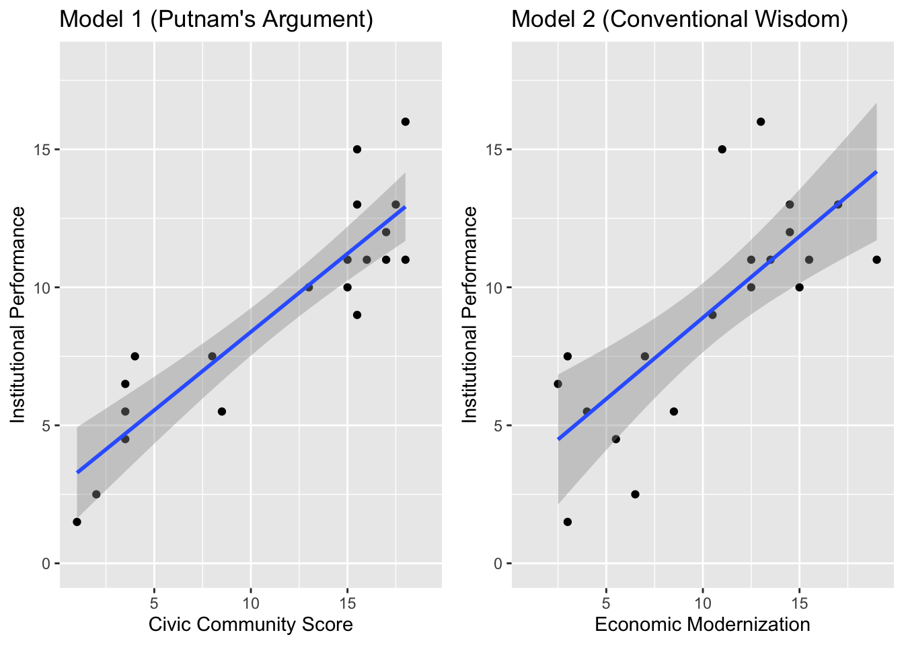
What about model fit? Consider which model fit is better. Hint: we need to think about \(R^2\) and root mean squared error (RMSE).
8.4.1 Controlling for North-South divide
We know that there are major differences in the North and the South of Italy. The regression we carried out do not consider this important dimension in any way. Let’s check the \(NorthSouth\) variable. It is a nominal level variable taking two values: North and South.
# Frequency table for NorthSouth
table(data$NorthSouth, useNA = "always")
#>
#> North South <NA>
#> 12 8 0Let’s recheck scatter plots while considering the North-South divide.
# Institutional Performance and Civic Community
ggplot(data, aes(x = CivicCommunity, y = InstPerform,
shape = NorthSouth,
color = NorthSouth)) +
geom_point(size = 3) +
labs(x = "Civic Community Score",
y = "Institutional Performance",
shape = "North-South",
color = "North-South")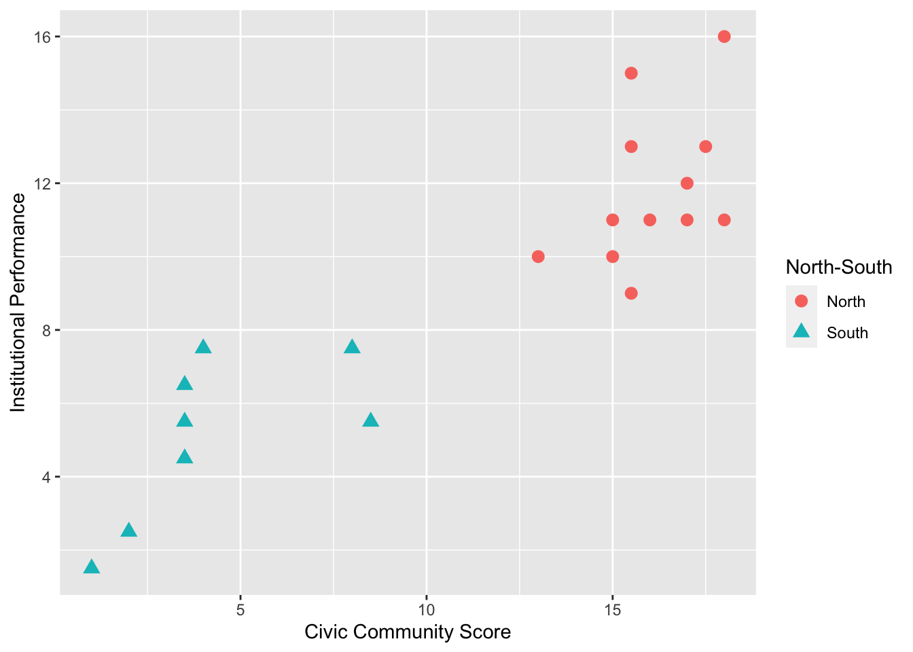
# Institutional Performance and Economic Modernization
ggplot(data, aes(x = EconModern, y = InstPerform,
shape = NorthSouth,
color = NorthSouth)) +
geom_point(size = 3) +
labs(x = "Economic Modernization",
y = "Institutional Performance",
shape = "North-South",
color = "North-South")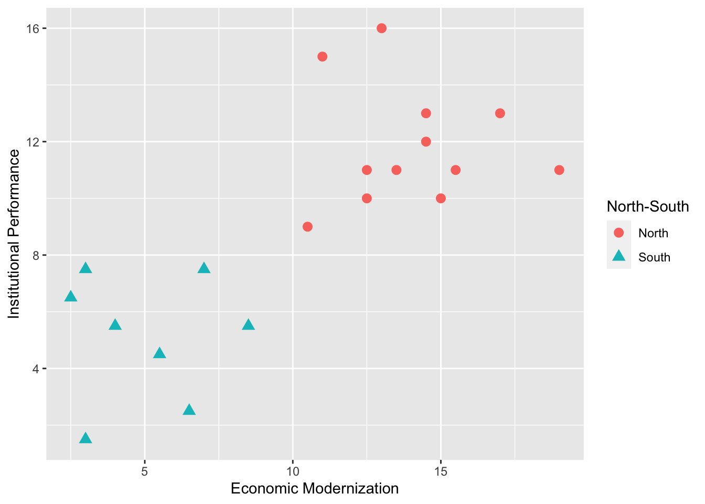
Things look slightly different now. Do these graphs give us any clue?
Next, we are going to add \(NorthSouth\) to our regression models. But before, let’s think about how R handles categorical variables.
Categorical Variables in R
To make reading the table easier, we are going to tell R that \(NorthSouth\) is a categorical variable. Otherwise, it will make an educated guess. It would work, but it would be harder to understand for the reader. For categorical variables, we need to allocate one category as the baseline (a.k.a benchmark category).
# check the data$NorthSouth
head(data$NorthSouth, 5)
#> [1] "South" "South" "South" "South" "North"
# Tell R that North-South is a categorical variable with two nominal groups
data$NorthSouth <- factor(data$NorthSouth, levels = c("North", "South"))
# Let's see again:
head(data$NorthSouth, 5)
#> [1] South South South South North
#> Levels: North South
# R now considers it as categorical
# The first 'level' is the categorical variable. It is North in this case
# Change the reference category to South
data$NorthSouth <- relevel(data$NorthSouth, ref = "South")
# Let's see again:
head(data$NorthSouth, 5)
#> [1] South South South South North
#> Levels: South NorthNow, the reference category is South in \(NorthSouth\). Let’s change it back to North.
# Change the reference category to North
data$NorthSouth <- relevel(data$NorthSouth, ref = "North")
# Let's see again:
head(data$NorthSouth, 3)
#> [1] South South South
#> Levels: North SouthWe are almost ready to run the regressions. Note that the variable \(NorthSouth\) is a nominal variable with two categories (i.e., North and South) and the baseline for is North. Once we define this, what R does behind the curtains is that it treats this variable as binary where zero refers to North (the baseline) and 1 refers to South.
So when moving from Model 1 to Model 1b (with control), our regression equation becomes as follows:
\[Model\ 1b:\ \ \ \ Y = \alpha + \beta_1 * CivicCommunity + \beta_2 * South + \epsilon\] \(South\) is a binary variable. When an observation is from the North, Model 1b becomes the following:
\[When\ South = 0 \ \ \rightarrow\ \ Y = \alpha + \beta_1 * CivicCommunity + \beta_2 * 0 + \epsilon \] Model 1b for observations from the South:
\[When\ South = 0 \ \ \rightarrow\ \ Y = \alpha + \beta_1 * CivicCommunity + \epsilon\]
Model 1b becomes the following for observations from the South:
\[When\ South = 1 \ \ \rightarrow\ \ Y = \alpha + \beta_1 * CivicCommunity + \beta_2 * 1 + \epsilon \] Putting the \(\beta_2\) to front:
\[When\ South = 1 \ \ \rightarrow\ \ Y = \beta_2 + \alpha + \beta_1 * CivicCommunity + \epsilon\]
In other words, the binary variable \(NorthSouth\) will allow the intercept to vary by North-South. Let’s run the model in R.
# Model 1b: Putnam's argument while controlling for the North-South divide
m1b <- lm(InstPerform ~ CivicCommunity + NorthSouth , data = data)Similarly, we introduce \(NorthSouth\) when wo move from Model 2 to Model 2b:
\[Model\ 2b:\ \ \ \ Y = \alpha + \beta_1 * EconModern + \beta_2 * South + \epsilon\]
# Model 2b: Conventional wisdom while controlling for the North-South divide
m2b <- lm(InstPerform ~ EconModern + NorthSouth, data = data)Now, we are ready to see all the results and compare them.
# results
screenreg(list(m1, m1b, m2, m2b),
include.rmse = T,
custom.model.names =c("Model 1", "Model 1b", "Model 2", "Model 2b"))
#>
#> =========================================================
#> Model 1 Model 1b Model 2 Model 2b
#> ---------------------------------------------------------
#> (Intercept) 2.71 ** 2.65 3.01 * 12.11 **
#> (0.84) (3.50) (1.38) (3.16)
#> CivicCommunity 0.57 *** 0.57 *
#> (0.07) (0.21)
#> NorthSouthSouth 0.05 -6.88 **
#> (2.68) (2.23)
#> EconModern 0.59 *** -0.02
#> (0.12) (0.22)
#> ---------------------------------------------------------
#> R^2 0.81 0.81 0.57 0.73
#> Adj. R^2 0.80 0.78 0.55 0.69
#> Num. obs. 20 20 20 20
#> RMSE 1.79 1.84 2.66 2.19
#> =========================================================
#> *** p < 0.001; ** p < 0.01; * p < 0.05While moving from Model 1 to Model 1b, we introduced a control for North-South divide. Even after controlling for \(NorthSouth\), \(CivicCommunity\) is still statistically significant. One unit of increase in \(CivicCommunity\) is associated with 0.57 units \(InstPerform\).
However, after controlling for \(NorthSouth\), the relationship between \(EconModern\) and \(InstPerform\) disappeared. The coefficient for \(EconModern\) is -0.02 and this coefficient is not statistically different than zero (i.e., no effect).
This aspect becomes clearer when we add regression lines.
# Institutional Performance and Civic Community
ggplot(data, aes(x = CivicCommunity, y = InstPerform,
shape = NorthSouth,
color = NorthSouth)) +
geom_point(size = 2) +
geom_smooth(method = "lm") +
labs(x = "Civic Community Score",
y = "Institutional Performance",
shape = "North-South",
color = "North-South")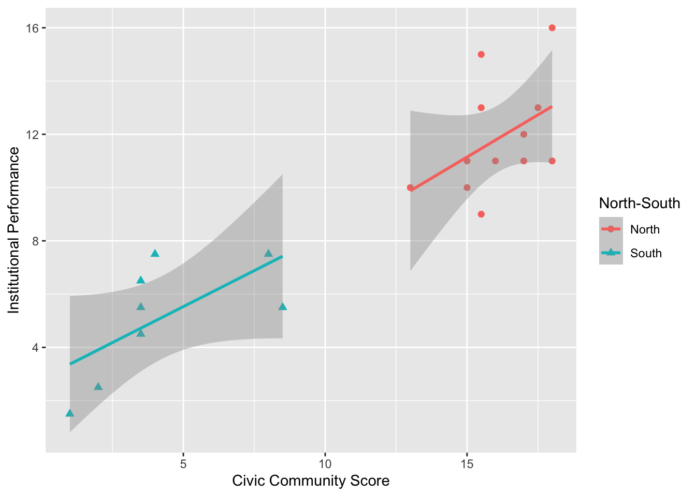
# Institutional Performance and Economic Modernization
ggplot(data, aes(x = EconModern, y = InstPerform,
shape = NorthSouth,
color = NorthSouth)) +
geom_point(size = 2) +
geom_smooth(method = "lm") +
labs(x = "Economic Modernization",
y = "Institutional Performance",
shape = "North-South",
color = "North-South")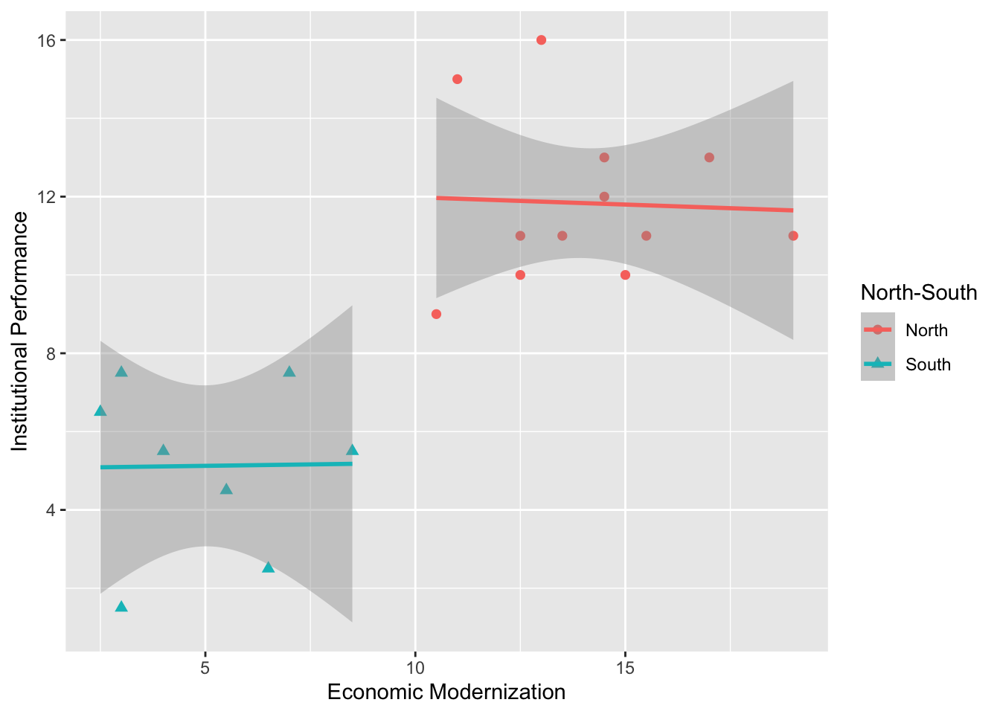
8.4.2 Marginal Effects
Let’s zoom in on the effects of variables we estimated using different modelling strategies. Recall that model coefficients directly indicate the magnitude of association.
screenreg(list(m2, m2b), include.rmse = T,
custom.model.names = c("Model 2", "Model 2b"))
#>
#> ====================================
#> Model 2 Model 2b
#> ------------------------------------
#> (Intercept) 3.01 * 12.11 **
#> (1.38) (3.16)
#> EconModern 0.59 *** -0.02
#> (0.12) (0.22)
#> NorthSouthSouth -6.88 **
#> (2.23)
#> ------------------------------------
#> R^2 0.57 0.73
#> Adj. R^2 0.55 0.69
#> Num. obs. 20 20
#> RMSE 2.66 2.19
#> ====================================
#> *** p < 0.001; ** p < 0.01; * p < 0.058.4.2.1 Model 2
Starting with the conventional wisdom (Model 2 and Model 2b), the coefficient for \(EconModern\) is 0.59 and -0.02 respectively. This means that the effect we see in Model 2 disappears once we control for the North-South.
We can visualize these using the effects() function. First, make sure to install it by typing install.packages("effects").
library(effects)
#> Loading required package: carData
#> lattice theme set by effectsTheme()
#> See ?effectsTheme for details.
# marginal effects of EconModern in Model 2
m2_econ <- effect(term = "EconModern", mod = m2)The marginal effect of \(EconModern\) in Model 2 (which is stored in m2_econ) is shown below.
# see the object strong marginal effect of EconModern in Model 2
m2_econ
#>
#> EconModern effect
#> EconModern
#> 2.5 6.6 11 15 19
#> 4.483062 6.897503 9.488611 11.844163 14.199715This means that:
- When X = 2.5, expected Y is: 4.483062
- When X = 6.6, expected Y is: 6.897503
- When X = 11, expected Y is: 9.488611
- When X = 15, expected Y is: 11.844163
- When X = 19, expected Y is: 14.199715
# let's plot it
plot(m2_econ)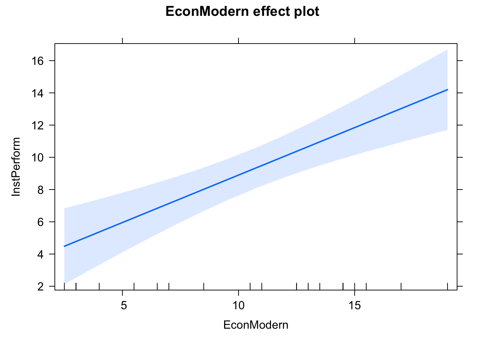
The plot above visualizes \(\beta_1 = 0.59\) in Model 2. However, it is missing proper titles and considering that we have many models, it might be easy to mix one plot with another. Therefore it is imperative to add proper titles. We can also define he scale of x and y axes.
# Marginal Effects of EconModern in Model 2
plot(m2_econ,
main = "Model 2: Economic Modernization Only",
ylab = "Institutional Performance",
xlab = "Economic Modernization",
ylim = c(0, 20),
xlim = c(0, 18)
)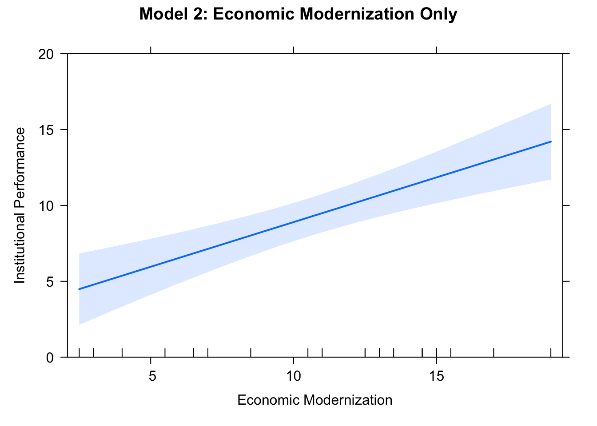
8.4.2.2 Marginal effects in Model 2b
Next, let’s turn our attention to Model 2b, which introduces the North-South control. Here, we need to estimate two scenarios: (1) the region is located in the North. (2) the region is located in the South. Recall that controlling for the North-South means adopting such an approach. In a way, Model 2b has two equations:
\(When\ South = 0 \ \ \rightarrow\ \ Y = \alpha + \beta_1 * CivicCommunity + \epsilon\) \(When\ South = 1 \ \ \rightarrow\ \ Y = \alpha + \beta_2 + \beta_1 * CivicCommunity + \epsilon\)
Using the input data, R prepares a new matrix suitable for mathematical analysis used in regression. We can check this matrix by relying on the model.matrix().
model.matrix(m2b)
#> (Intercept) EconModern NorthSouthSouth
#> 1 1 7.0 1
#> 2 1 3.0 1
#> 3 1 3.0 1
#> 4 1 6.5 1
#> 5 1 13.0 0
#> 6 1 14.5 0
#> 7 1 12.5 0
#> 8 1 15.5 0
#> 9 1 19.0 0
#> 10 1 10.5 0
#> 11 1 2.5 1
#> 12 1 17.0 0
#> 13 1 4.0 1
#> 14 1 8.5 1
#> 15 1 5.5 1
#> 16 1 14.5 0
#> 17 1 12.5 0
#> 18 1 11.0 0
#> 19 1 15.0 0
#> 20 1 13.5 0
#> attr(,"assign")
#> [1] 0 1 2
#> attr(,"contrasts")
#> attr(,"contrasts")$NorthSouth
#> [1] "contr.treatment"Note that a new variable called \(NorthSouthSouth\) was created by R. This is a binary variable taking the values 1 when the observation is from the South and 0 otherwise (when the observation is from the North).
We are going to estimate the Institutional Performance based on different values of Economic Modernization for North and South.
# Marginal Effects
# South:
m2b_econ_s1 <- effect(term = "EconModern",
mod = m2b,
given.values = c("NorthSouthSouth" = 1)
)
# see the effects:
m2b_econ_s1
#>
#> EconModern effect
#> EconModern
#> 2.5 6.6 11 15 19
#> 5.173533 5.093939 5.008520 4.930866 4.853213This output tells me the following.
When the region is in the South and … :
- Economic Modernization = 2.5 \(\ \ \ \rightarrow \ \ \ \hat{Y} = 5.17\)
- Economic Modernization = 6.6 \(\ \ \ \rightarrow \ \ \ \hat{Y} = 5.09\)
- Economic Modernization = 11 \(\ \ \ \rightarrow \ \ \ \hat{Y} = 5.01\)
- Economic Modernization = 15 \(\ \ \ \rightarrow \ \ \ \hat{Y} = 4.93\)
- Economic Modernization = 19 \(\ \ \ \rightarrow \ \ \ \hat{Y} = 4.85\)
Let’s plot these.
# Marginal Effects of EconModern in Model 2b (South)
plot(m2b_econ_s1,
main = "Model 2b: Economic Modernization (South Italy)",
ylab = "Institutional Performance",
xlab = "Economic Modernization",
ylim = c(0, 19),
xlim = c(0, 18)
)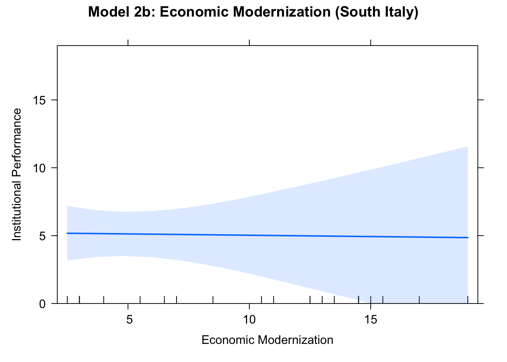
# North:
m2b_econ_s0 <- effect(term = "EconModern",
mod = m2b,
given.values = c("NorthSouthSouth" = 0)
)
# see the effects:
m2b_econ_s0
#>
#> EconModern effect
#> EconModern
#> 2.5 6.6 11 15 19
#> 12.05740 11.97780 11.89238 11.81473 11.73708This output tells me the following.
When the region is in the North and … :
- Economic Modernization = 2.5 \(\ \ \ \rightarrow \ \ \ \hat{Y} = 12.06\)
- Economic Modernization = 6.6 \(\ \ \ \rightarrow \ \ \ \hat{Y} = 11.98\)
- Economic Modernization = 11 \(\ \ \ \rightarrow \ \ \ \hat{Y} = 11.89\)
- Economic Modernization = 15 \(\ \ \ \rightarrow \ \ \ \hat{Y} = 11.82\)
- Economic Modernization = 19 \(\ \ \ \rightarrow \ \ \ \hat{Y} = 11.34\)
Let’s also plot these.
# Marginal Effects of EconModern in Model 2b (North)
plot(m2b_econ_s0,
main = "Model 2b: Economic Modernization (North Italy)",
ylab = "Institutional Performance",
xlab = "Economic Modernization",
ylim = c(0, 19),
xlim = c(0, 18)
)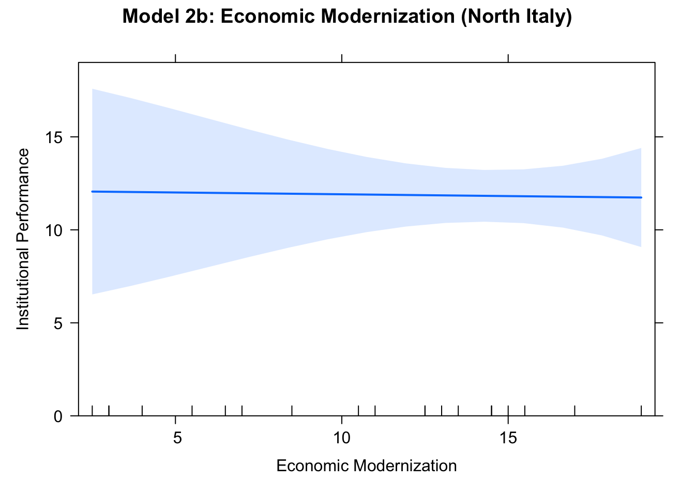
It is possible to put these last two figures next to each other by using the package gridExtra. As usual, please install it first by running install.packages().
library("gridExtra")# Marginal Effects of EconModern in North
# plot saved in an object
p2b_1 <- plot(m2b_econ_s0,
main = "North Italy",
ylab = "Institutional Performance",
xlab = "Economic Modernization",
ylim = c(0, 19),
xlim = c(0, 18)
)
# Marginal Effects of EconModern in South
# plot saved in an object
p2b_2 <- plot(m2b_econ_s1,
main = "South Italy",
ylab = "Institutional Performance",
xlab = "Economic Modernization",
ylim = c(0, 19),
xlim = c(0, 18)
)
# Put two plots next to each other:
grid.arrange(p2b_1, p2b_2, ncol = 2)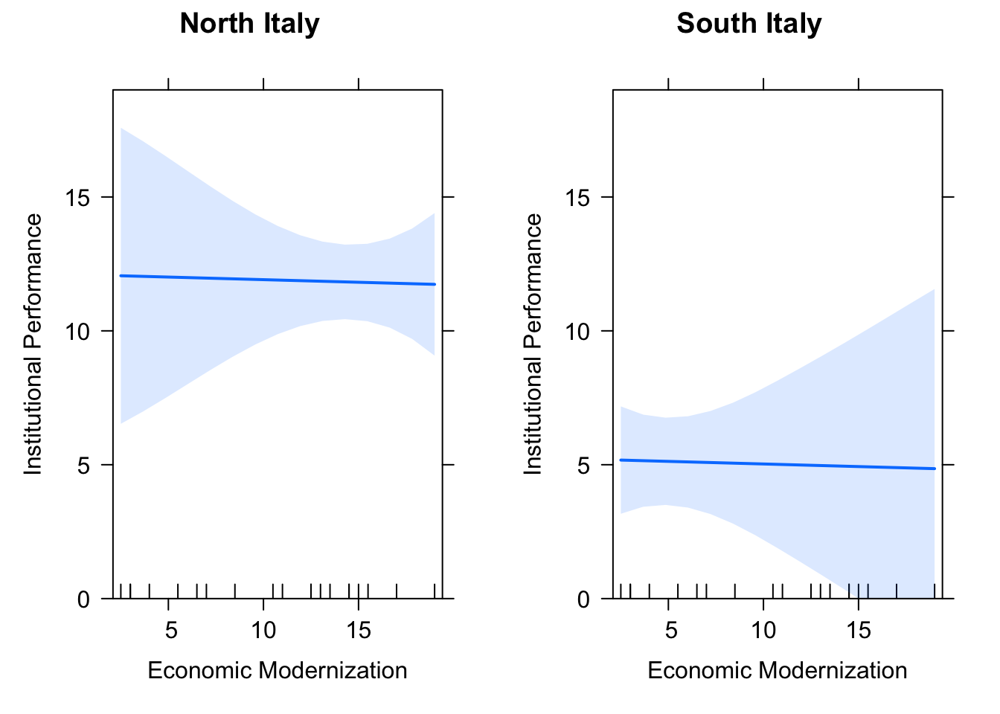
It is clear that Economic Modernization does not have a relationship with \(Institutional Performance\) once we control for the North-South difference.
8.4.2.3 Marginal effects in Model 1b
What about Putnam’s claim? Let’s reproduce the steps we did for Model 2b for Model 1b.
# See the model matrix
model.matrix(m1b)
#> (Intercept) CivicCommunity NorthSouthSouth
#> 1 1 8.0 1
#> 2 1 4.0 1
#> 3 1 1.0 1
#> 4 1 2.0 1
#> 5 1 18.0 0
#> 6 1 17.0 0
#> 7 1 13.0 0
#> 8 1 16.0 0
#> 9 1 17.0 0
#> 10 1 15.5 0
#> 11 1 3.5 1
#> 12 1 15.5 0
#> 13 1 3.5 1
#> 14 1 8.5 1
#> 15 1 3.5 1
#> 16 1 17.5 0
#> 17 1 18.0 0
#> 18 1 15.5 0
#> 19 1 15.0 0
#> 20 1 15.0 0
#> attr(,"assign")
#> [1] 0 1 2
#> attr(,"contrasts")
#> attr(,"contrasts")$NorthSouth
#> [1] "contr.treatment"Calculate the marginal effects.
# Marginal effects for North
# North:
m1b_civic_s0 <- effect(term = "CivicCommunity",
mod = m1b,
given.values = c("NorthSouthSouth" = 0)
)
# South:
m1b_civic_s1 <- effect(term = "CivicCommunity",
mod = m1b,
given.values = c("NorthSouthSouth" = 1)
)Next, plotting.
plot(m1b_civic_s0,
main = "Model 1b (North)",
xlab = "Civic Community",
ylab = "Institutional Performance")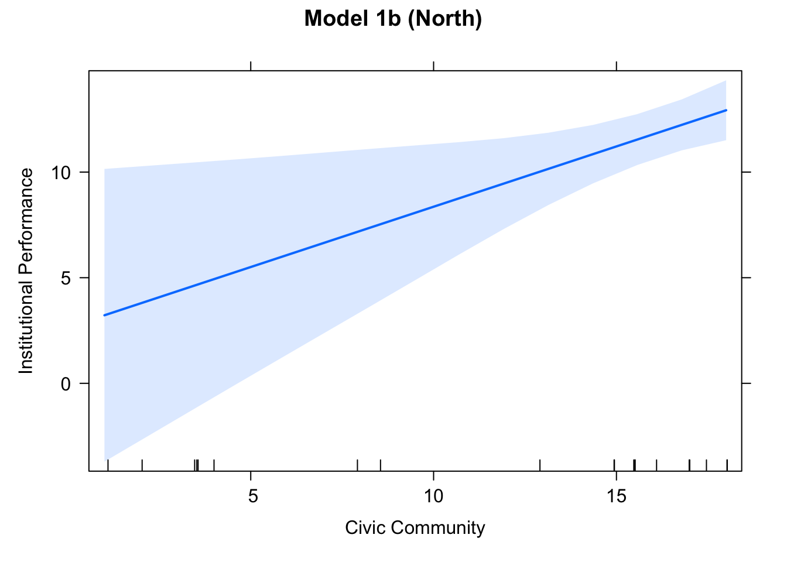
plot(m1b_civic_s1,
main = "Model 1b (South)",
xlab = "Civic Community",
ylab = "Institutional Performance")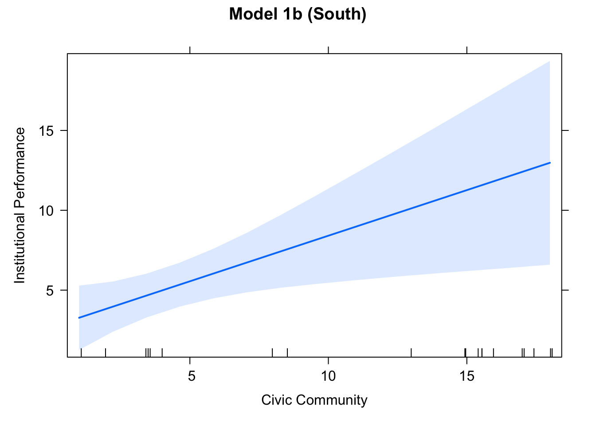
Let’s put these last two graphs together.
# Marginal Effects of CivicCommunity in North
# plot saved in an object
p1b_1 <- plot(m1b_civic_s0,
main = "North of Italy",
xlab = "Civic Community",
ylab = "Institutional Performance",
ylim = c(0,19),
xlim = c(0,16)
)
# Marginal Effects of CivicCommunity in South
# plot saved in an object
p1b_2 <- plot(m1b_civic_s1,
main = "South of Italy",
xlab = "Civic Community",
ylab = "Institutional Performance",
ylim = c(0,19),
xlim = c(0,16)
)
# Put two plots next to each other:
grid.arrange(p1b_1, p1b_2, ncol = 2)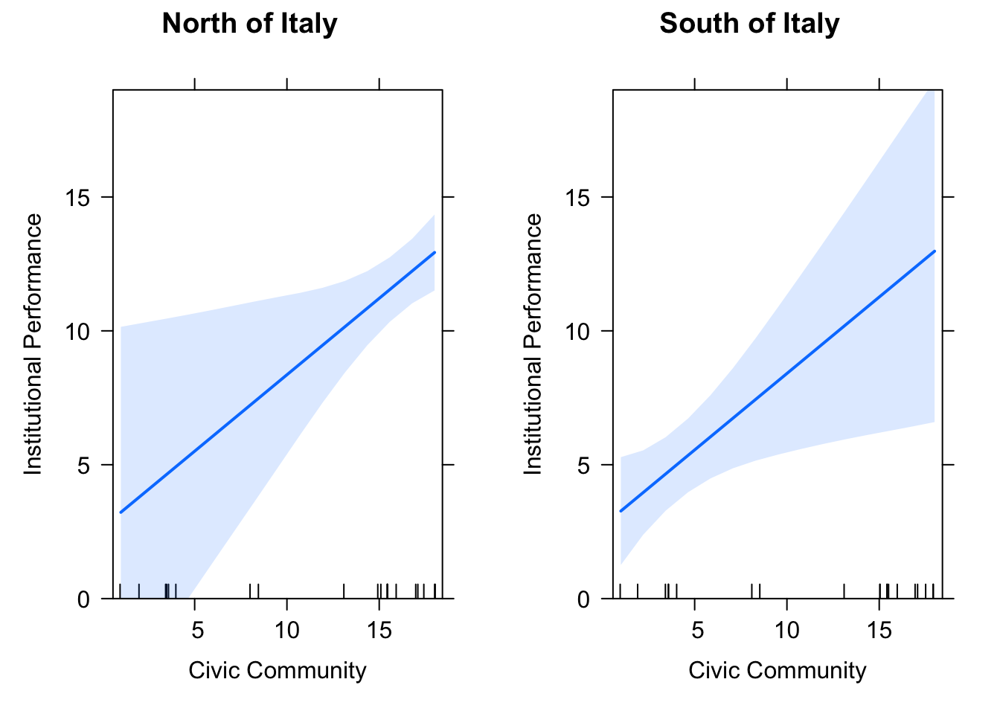
8.4.3 Model 3: Controlling for North-South and Economic Modernization
Finally, we can have a model where we add all three independent variables.
\[Model\ 3: Y = \alpha + \beta_1 * CivicCommunity + \beta_2 *EconModern + \beta_3 * South + \epsilon\]
# Model 3 regression
m3 <- lm(InstPerform ~ CivicCommunity + EconModern + NorthSouth, data = data)
# results
screenreg(list(m1, m1b, m2, m2b, m3),
include.rmse = T,
custom.model.names =c("Model 1", "Model 1b",
"Model 2", "Model 2b", "Model 3"))
#>
#> ===================================================================
#> Model 1 Model 1b Model 2 Model 2b Model 3
#> -------------------------------------------------------------------
#> (Intercept) 2.71 ** 2.65 3.01 * 12.11 ** 4.35
#> (0.84) (3.50) (1.38) (3.16) (3.64)
#> CivicCommunity 0.57 *** 0.57 * 0.70 **
#> (0.07) (0.21) (0.23)
#> NorthSouthSouth 0.05 -6.88 ** -0.86
#> (2.68) (2.23) (2.70)
#> EconModern 0.59 *** -0.02 -0.27
#> (0.12) (0.22) (0.20)
#> -------------------------------------------------------------------
#> R^2 0.81 0.81 0.57 0.73 0.83
#> Adj. R^2 0.80 0.78 0.55 0.69 0.79
#> Num. obs. 20 20 20 20 20
#> RMSE 1.79 1.84 2.66 2.19 1.80
#> ===================================================================
#> *** p < 0.001; ** p < 0.01; * p < 0.05In Model 3, only \(CivicCommunity\) has a significant effect on \(InstPerform\). How to demonstrate marginal effects of a variables of interest when we have multiple control variables?
R will give us an output if we ask for the effect of \(CivicCommunity\) and left the other variables unspecified.
effect(term = "CivicCommunity", mod = m3)
#>
#> CivicCommunity effect
#> CivicCommunity
#> 1 5.2 9.5 14 18
#> 1.905409 4.845243 7.855073 11.004895 13.804737What happening behind the curtains is that R plugs in the mean values in the data. Taking the mean of categorical variables are not really meaningful. Can we really have a region of 0.5 North? Not really.
Let’s define each bit one by one. I am going to tell R to calculate expected values of Institutional Performance with respect to different values of Civic Community for North and South separately. And for Economic Modernization, I am going to plug in the mean value of the respective geography.
We are going to calculate the mean of Economic Modernization for South and North separetely.
# Mean of Economic Modernization in the South
em_mean_south <- data$EconModern[data$NorthSouth == "South"] |> mean()
# Mean of Economic Modernization in the North
em_mean_north <- data$EconModern[data$NorthSouth == "North"] |> mean()It is time to use the effect() function.
# For South
m3_civic_s0 <- effect(term = "CivicCommunity",
mod = m3,
given.values = c("NorthSouthSouth" = 1,
"EconModern" = em_mean_south)
)
# For North
m3_civic_s1 <- effect(term = "CivicCommunity",
mod = m3,
given.values = c("NorthSouthSouth" = 0,
"EconModern" = em_mean_north)
)Let’s see the expected values of Institutional Performance with respect to different values of Civic Community in the North and the South when we plug in the mean Economic Modernization for the respective geographies.
# Predictions for Institutional Performance in the North
m3_civic_s0
#>
#> CivicCommunity effect
#> CivicCommunity
#> 1 5.2 9.5 14 18
#> 2.850128 5.789962 8.799792 11.949615 14.749457This means that a Northern Region with an average economic modernization typical in the North:
- When Civic Community = 1, expected Y is: 2.850128
- When Civic Community = 5.2, expected Y is: 5.789962
- When Civic Community = 9.5, expected Y is: 8.799792
- When Civic Community = 14, expected Y is: 11.949615
- When Civic Community = 18, expected Y is: 14.749457
# Predictions for Institutional Performance in the South
m3_civic_s1
#>
#> CivicCommunity effect
#> CivicCommunity
#> 1 5.2 9.5 14 18
#> 1.275596 4.215430 7.225260 10.375082 13.174924These are expected Institutional Performance of a Southern Region with an average economic modernization typical in the South.
Finally, let’s plot them.
# Marginal Effects of CivicCommunity in North
# plot saved in an object
p3_1 <- plot(m3_civic_s0,
main = "North of Italy",
xlab = "Civic Community",
ylab = "Institutional Performance",
ylim = c(0,19),
xlim = c(0,16)
)
# Marginal Effects of CivicCommunity in South
# plot saved in an object
p3_2 <- plot(m3_civic_s1,
main = "South of Italy",
xlab = "Civic Community",
ylab = "Institutional Performance",
ylim = c(0,19),
xlim = c(0,16)
)
# put these together
grid.arrange(p3_1, p3_2, ncol = 2)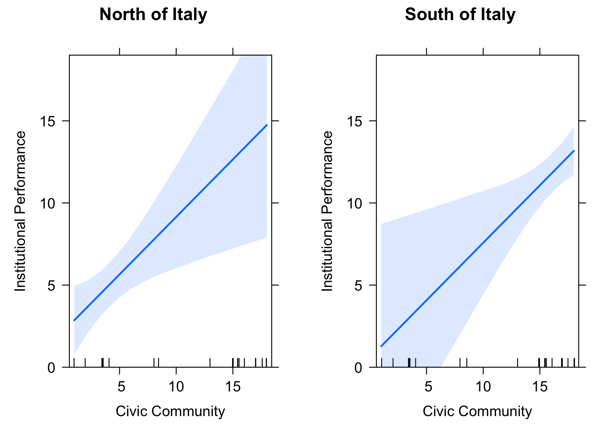